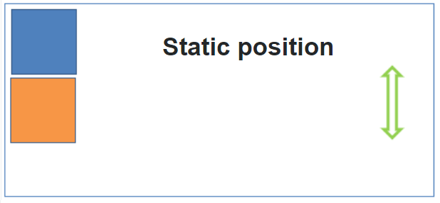
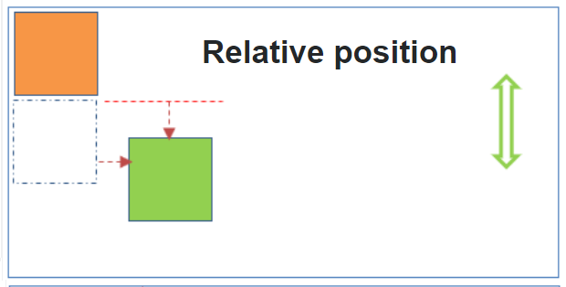
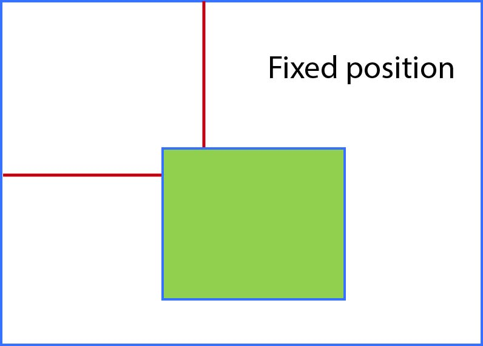
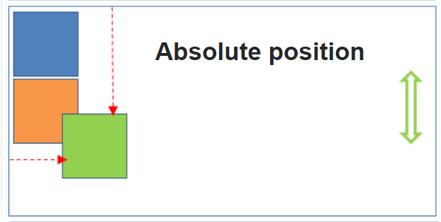
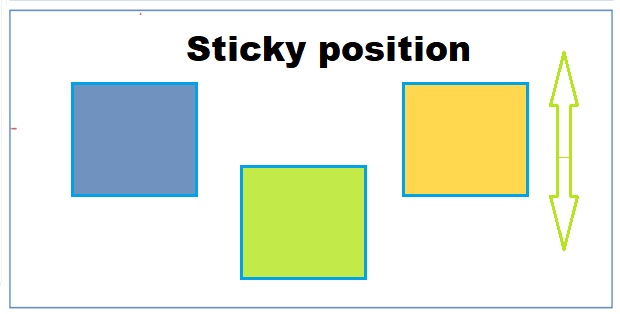
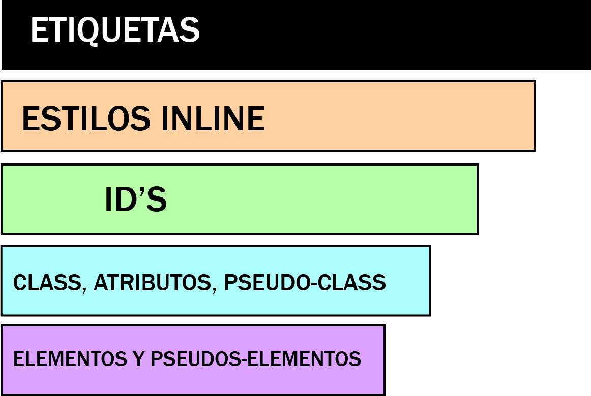
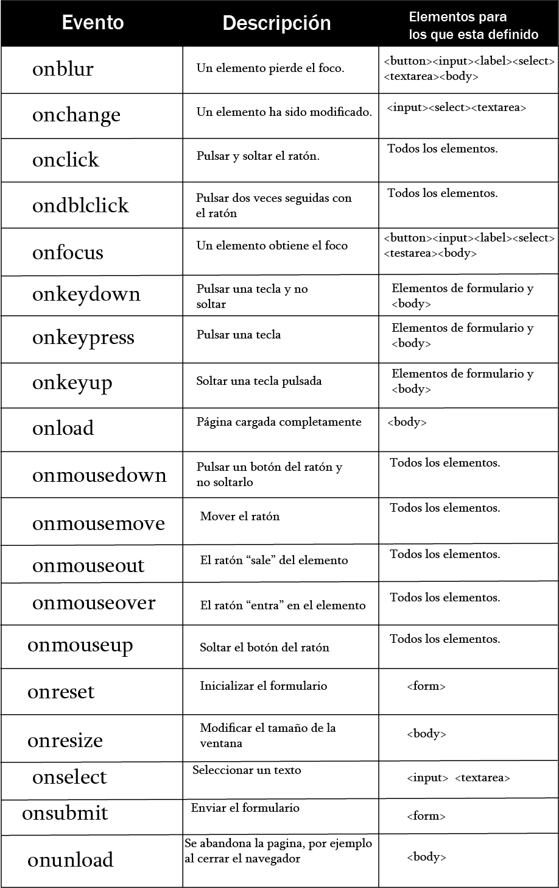
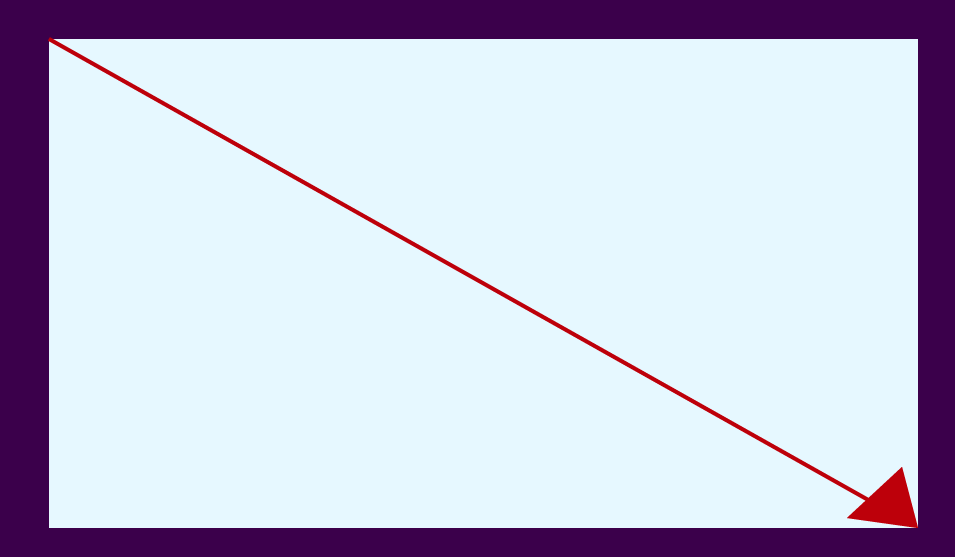
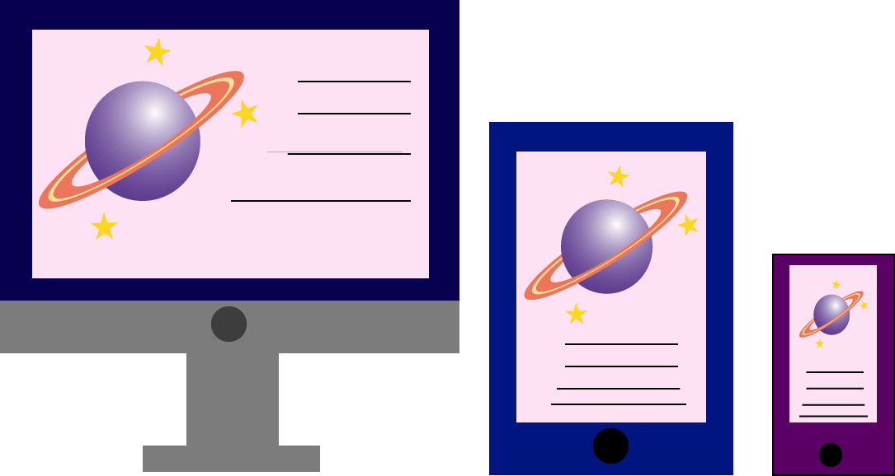

Css
CSS (en inglés Cascading Style Sheets) es lo que se denomina lenguaje de hojas de estilo en cascada y se usa para estilizar elementos escritos en un lenguaje de marcado como HTML. CSS separa el contenido de la representación visual del sitio.
Propiedad Position Especifica el tipo de método de posicionamiento utilizado para un elemento. Hay cinco posiciones diferentes:
Static
Relative
Fixed
Absolud
Stiky
Los elementos se posicionan usando las propiedades top, bottom, left, y right. tambien funcionan de manera diferente dependiendo del valor de la posición.
Position Static. 
Los elementos HTML se posicionan de forma predeterminada. los elementos posicionados estáticos no se ven afectados por las propiedades top, bottom, left, y right.
Position Relative. 
Un elemento con posición relativa; está posicionado en Relación a su posición normal. El posicionamiento relativo desplaza una caja respecto de su posición original, establecida mediante el posicionamiento. El desplazamiento de la caja se controla con las propiedades top, bottom, left, y right. Un elemento fijo no deja un espacio en la página donde normalmente se ubicará.
Position Fixed. 
Un elemento con posición fija está ubicado en relación con la ventana gráfica, lo que significa que siempre permanece en el mismo lugar, incluso si la página se desplaza. Los elementos top, bottom, left, y right, se utilizan para posicionar el elemento. Un elemento fijo no deja espacio en la página donde normalmente se ubicaría.
Position Static.
Los elementos HTML se posicionan de forma predeterminada. los elementos posicionados estáticos no se ven afectados por las propiedades top, bottom, left, y right.
Position Absolut. 
El posicionamiento: absoluto se emplea para establecer de forma exacta la posición en la que se muestra la caja de un elemento. La nueva posición del elemento se indica mediante las propiedades top, bottom, left, right.Que en este caso dependen del posicionamiento del elemento contenedor (padre).Cuando un elemento se posiciona de forma absoluta, el resto de los elementos de la página se ven afectados y modifican su posición. Los demás elementos ocuparan el espacio que deja el elemento desplazado y es probable que se produzcan solapamientos con otros elementos
Position Sticky 
Un elemento con posición: sticky; se posiciona en función de la posición de desplazamiento del usuario. Un elemento sticky alterna entre relativo y fijo, dependiendo de la posición de desplazamiento. Se posiciona se forma relativa hasta que se encuentra una posición de desplazamiento dada en la ventana gráfica, luego se pega en su lugar (como posición: fija).
Referenciar. Referenciar con el atributo id .
El atributo id es como un nombre que identifica al elemento. Esto significa que el valor de este atributo no puede ser duplicado. Para referenciar un elemento en particular usando el atributo id desde nuestro archivo CSS la regla debe ser declarada con el símbolo # al frente del valor que usamos para identificar el elemento.
Referenciar por el atributo class .
Este atributo es más flexible y puede ser asignado a varios elementos HTML en el documento que comparten un diseño similar. Para trabajar con el atributo class, debemos declarar la regla CSS con un punto antes del nombre. CSS3 también incorpora nuevas pseudo clases que hacen la selección aún más específica.CSS3 también incorpora nuevas pseudo clases que hacen la selección aún más específica:
= Permite combinar con otros signos para hacer una selección más especifica.^= Será asignada a todo elemento p que contiene un atributo id con un valor comenzado por la misma silaba.$= Será asignado a todo un elemento p que contiene un atributo id con un valor finalizado en la misma silaba.*= Será asignado a todo elemento p que contiene un atributo id con un valor que incluya la misma silaba.Nuevos selectores.
Algunos selectores más que fueron agregados o que ahora son considerados parte de CSS3 y pueden ser útiles para nuestros diseños. Estos selectores usan los símbolos >, + y ~ para especificar la relación entre elementos:
> Selecciona todos los elementos p donde el padre es un elemento div.+ Selecciona todos los elementos p que se colocan inmediatamente después de los elementos div.~ aplica el estilo a todos los elementos ul que son hermanos y se encuentran después del elemento p. Especificidad La especificidad es el medio por el cual los navegadores deciden qué valores de propiedad CSS son los más relevantes para un elemento y, por lo tanto, se aplicarán.
¿Cómo se calcula la especificidad?
La especificidad solo se aplica cuando el mismo elemento es el objetivo de varias declaraciones. Según las reglas de CSS, los elementos dirigidos directamente siempre tendrán prioridad sobre las reglas que un elemento hereda de su antepasado. Cuando varias declaraciones tienen la misma especificidad, la última declaración encontrada en CSS se aplica al elemento.
Jerarquía de especificidad.
Cada selector tiene su lugar en la jerarquía de especificidad. Hay cuatro categorías que definen el nivel de especificidad de un selector:
Estilos en línea: un estilo en línea se adjunta directamente al elemento que se va a diseñar. Ejemplo: h1 style = "color: #ffffff;".ID: una ID es un identificador único para los elementos de la página, como #navbar.Clases, atributos y pseudo-clases: esta categoría incluye, clases, [atributos] y pseudoclases como: hover,: focus, etc.Elementos y pseudo-elementos: esta categoría incluye nombres de elementos y pseudo-elementos, como h1, div,: before y: after 
Reglas:
Igual especificidad: la última regla cuenta: si la misma regla se escribe dos veces en la hoja de estilo externa, entonces la regla inferior en la hoja de estilo está más cerca del elemento que se va a diseñar y, por lo tanto, se aplicará: siempre se aplica la última regla.
Sector universal.
El selector universal y los valores heredados tienen una especificidad de 0 - *, el cuerpo * y similares tienen una especificidad cero. Los valores heredados también tienen una especificidad de 0.
La Excepción !important.
Cuando se usa una regla !important en una declaración de estilo, esta declaración anula cualquier otra declaración.! !important no tiene nada que ver con la especificidad, interactúa directamente con ella.
Sin embargo, usar !!important es una mala práctica y debe evitarse porque dificulta la depuración al romper la cascada natural en sus hojas de estilo.
Cuando se aplican dos declaraciones en conflicto con la regla !!important al mismo elemento, se aplicará la declaración con una mayor especificidad.
Animación Cuando especifica estilos en CSS dentro de la regla @keyframes, la animación cambiara del estilo actual al nuevo, para que la animación funcione, se debe vincular la animación a un elemento.
animation-delay
Especifica un retraso para el inicio de una animación. se expresa en segundos, se pueden utilizar unidades negativas.
animation-timing-funvtion.
Especifica la curva de velocidad de la animación.
linear: especifica una animación con la misma velocidad de principio a fin. ease: especifica una animación con un inicio lento, luego rápido y luego termina lentamente (esto es por defecto). ease-in: especifica una animación con un inicio lento. ease-out: especifica una animación con un final lento. ease-in-out: especifica una animación con un inicio y un final lentos. cubic-bezier (n, n, n, n): permite definir sus propios valores en una función cubic-bezier. Requiere valores numéricos de 0 a 1.
animation-direction.
Especifica si una animación debe reproducirse hacia adelante, hacia atrás o en ciclos alternos.
Normal: la animación se reproduce de forma normal (hacia delante). Esto es predeterminado.Reverse: la animación se reproduce en dirección inversa (hacia atrás). altenate: la animación se reproduce hacia delante y luego hacia atrás.alternate-reverse: la animación se reproduce hacia atrás primero, luego hacia adelante.animation-iteration-count.
Especifica el número de veces que se debe reproducir una animación. Se expresa con números cerrados y se puede usar también infinito.
animation-play-state.
Especifica si la animación se está ejecutando (running) o está en pausa (paused).
animation-duration
Especifica cuánto tiempo debe transcurrir una animación para completar un ciclo. Si no se especifica la propiedad de duración de la animación, no se producirá ninguna animación, ya que el valor predeterminado es 0 segundos. También, se puede especificar cuándo cambiará usando “to (0% inicio)” y “from (100%, completo)”.
animation-fill-mode.
Especifica un estilo para el elemento cuando la animación no se está reproduciendo (antes de que comience, después de que termine o ambos)
none: valor predeterminado. la animacion no aplicara ningun estilo al elemento antes o despues de ejecutarlo.forwards: El elemento retendra los valores de estilo establecidos por el primer fotograma clave y conservara durante el periodo de demora de la animacion.both: La animacion seguira las reglas tanto para adelante como para atras, extendiendo las propiedades de animacion en ambas direcciones.
JavaScript
Es un lenguaje de secuencias de comandos que te permite crear contenido de actualización dinámica, controlar multimedia, animar imágenes y prácticamente todo lo demás. (Está bien, no todo, pero es sorprendente lo que puedes lograr con unas pocas líneas de código JavaScript).
DOM El Modelo de objetos de documento (DOM) del W3C es una plataforma y una interfaz de lenguaje neutral que permite que los programas y los scripts accedan y actualicen dinámicamente el contenido, la estructura y el estilo de un documento. Cuando se carga una página web, el navegador crea un Modelo de objeto de documento de la página, con el DOM, los programadores pueden construir documentos, navegar por su estructura, y añadir, modificar, o eliminar elementos y contenido. Se puede acceder a casi cualquier elemento que se encuentre en un documento HTML. En pocas palabras el DOM es una interfaz que implementan los navegadores para poder interactuar con los elementos HTML
Conversión: el navegador lee los bytes sin procesar del HTML del disco o de la red y los traduce en caracteres individuales según la codificación especificada del archivo (por ejemplo, UTF-8).Conversión en tokens: el navegador convierte cadenas de caracteres en tokens diferentes —especificados por el estándar W3C HTML5; por ejemplo, “html”, “body” —y otras cadenas entre paréntesis angulares. Cada token tiene un significado especial y un conjunto de reglas propio.Lexicalización: los tokens emitidos se convierten en “objetos” que definen sus propiedades y reglas.Construcción del DOM: Por último, los objetos creados se vinculan en una estructura de datos en forma de árbol que muestra las relaciones entre objetos primarios y secundarios definidas en el HTML original.Encontrar elementos por su id.
El método getElementById() encuentra al elemento que tiene el idespecificado, este método es uno de los más comunes en HTML DOM, y se usa casi cada vez que desea manipular u obtener información de un elemento en su documento. Como ya sabemos, un iddebe ser único en un archivo HTML. Sin embargo, si existe más de un elemento con el idespecificado, el método getElementById() devuelve el primer elemento en el código fuente. Si no hay elementos con el idespecificado devuelve null.
Encontrar elementos por su nombre de clase.
El método getElementsByClassName() devuelve una colección de todos los elementos en el documento con el nombre de clase especificado, como un objetoHTMLCollection(lista de elementos HTML). El objeto HTMLCollectionrepresenta una colección de nodos. Se puede acceder a los nodos por números de índice. El índice comienza en 0.
Encontrar elementos por su nombre de etiqueta.
El método getElementsByTagName() devuelve una colección de todos los elementos en el documento con el nombre de etiqueta especificado, como un objeto HTMLCollection. El objeto HTMLCollectionrepresenta una colección de nodos. Se puede acceder a los nodos por números de índice. El índice comienza en 0. Con el valor del parámetro "*" devuelve todos los elementos en el documento. Usando la propiedad de lenghtdel objeto HTMLCollectionpara determinar la cantidad de elementos con el nombre de etiqueta especificado, luego puede recorrer todos los elementos y extraer la información que desee.
Encontrar elementos por su selector CSS.
El método querySelector() devuelve el primer elemento que coincide con un selector CSS especificado en el documento. Si el selector coincide con una "id" en el documento que se usa varias veces (hay que tener en cuenta que un "id" debe ser único dentro de una página y no debe usarse más de una vez), devuelve el primer elemento coincidente. El método querySelector() solo devuelve el primer elemento que coincide con los selectores especificados. Para devolver todas las coincidencias, utilice el método querySelectorAll() en su lugar, tambien devuelve todos los elementos del documento que coinciden con un selector "id" especificado, como un objeto NodeListestático. document.querySelectorAll('selector CSS, o varios selectores separados por comas’).
Referenciando Usamos el atributo src en la etiqueta script para vincular el archivo JavaScript al archivo HTML en este método. El atributo src se utiliza para especificar la URL o la ubicación del archivo externo. Si deseamos utilizar el mismo JavaScript en varias páginas de un sitio web, debemos crear un archivo JavaScript externo en lugar de escribir el mismo una y otra vez. Escribimos el script dentro de la etiqueta head en HTML.
A diferencia del primer método, agregamos el código de JavaScript en el archivo HTML usando la etiqueta script. La etiqueta script se utiliza para agregar un script del lado del cliente. Podemos escribir el JavaScript internamente dentro de la etiqueta script en un archivo HTML. Cuando ejecutamos el archivo HTML, veremos el JavaScript cargado.
Propiedad Style. El objeto básico style , presenta los estilos definidos para el DOM en su especificación de nivel 2. Para obtener los objetos style de un document, podemos usar la propiedad document.styleSheets y llegar a los distintos objetos por su índice (por ejemplo: document.styleSheets[0] es la primer stylesheet definida en el documento, etc.). Aunque hay varias formas y sintaxis para expresar una stylsheet para un documento, Netscape implementa exclusivamente, CSS, de manera que el objeto style obtenido por este método, es a la vez StyleSheet y CSSStyleSheet .
El elemento propiedad style puede ser usado también para leer o establecer el estilo de un elemento. Sin embargo, esta propiedad solo devuelve atributos de estilo que han sido establecidos in-line (por ejemplo: td style="background-color: lightblue" devuelve la cadena "background-color: lightblue" o directamente para ese elemento usando element.style.propertyName, aún si hay otros estilos definidos para ese elemento en un stylesheet). De igual manera, cuando establecemos esa propiedad en un elemento, sobreescribimos y borramos cualquier estilo que hubiera sido fijado en alguna otra parte para la propiedad particular de ese elemento que estamos estableciendo.
El objeto estilo (style) de DOM
El objeto style representa una sentencia de estilo individual. Al contrario de las reglas individuales disponibles en la colección: document.styleSheets, se accede al objeto style a partir del document o desde el elemento para el cual se aplica el estilo. Representa pues, el estilo in-line de ese elemento.
Si embargo, que el método setAttribute eliminará cualquier otra propiedad que haya podido ser definida en el estilo del objeto. Si el elemento some-element arriba, tenia un atributo de estilo in-line como style="font-size: 18px", ese valor habrá sido eliminado por el uso de setAttribute.
Eventos El modelo simple de eventos se introdujo en la versión 4 del estándar HTML y se considera parte del nivel más básico de DOM. Aunque sus características son limitadas, es el único modelo que es compatible con todos los navegadores y por tanto, el único que permite crear aplicaciones que funcionan de la misma manera en todos los navegadores.
Tipos de eventos. El nombre de los elementos se contruye mediante el prefijo on, seguido del nombre en ingles de la accion asociada al evento. El evento de pinchar un elemento con el ratón se denomina onclick y el evento asociado a la acción de mover el ratón se denomina onmousemove.
Los eventos más utilizados en las aplicaciones web tradicionales son onload para esperar a que se cargue la página por completo, los eventos onclick, onmouseover, onmouseout para controlar el ratón y onsubmit para controlar el envío de los formularios. Las acciones típicas que realiza un usuario en una página web pueden dar lugar a una sucesión de eventos.
Para que los eventos resulten útiles, se deben asociar funciones o código JavaScript a cada evento. De esta forma, cuando se produce un evento se ejecuta el código indicado, por lo que la aplicación puede responder ante cualquier evento que se produzca durante su ejecución.

Manejadores como atributo.
Se trata del método más sencillo y a la vez menos profesional de indicar el código JavaScript que se debe ejecutar cuando se produzca un evento. En este caso, el código se incluye en un atributo del propio elemento HTML. En este método, se definen atributos HTML con el mismo nombre que los eventos que se quieren manejar.
Manejadores de eventos y variable THIS.
JavaScript define una variable especial llamada this que se crea automáticamente y que se emplea en algunas técnicas avanzadas de programación. En los eventos, se puede utilizar la variable this para referirse al elemento HTML que ha provocado el evento. Dentro del código de un evento, JavaScript crea automáticamente la variable this, que hace referencia al elemento HTML que ha provocado el evento.
Manejadore de eventos como funciones externas
La definición de manejadores de eventos en los atributos HTML es un método sencillo pero poco aconsejable para tratar con los eventos en JavaScript. El principal inconveniente es que se complica en exceso en cuanto se añaden algunas pocas instrucciones, por lo que solamente es recomendable para los casos más sencillos. Cuando el código de la función manejadora es más complejo, como por ejemplo la validación de un formulario, es aconsejable agrupar todo el código JavaScript en una función externa que se invoca desde el código HTML cuando se produce el evento. En las funciones externas no es posible utilizar la variable this de la misma forma que en los manejadores insertados en los atributos HTML.
ClassList Es classList es una propiedad de solo lectura de un elemento que devuelve una colección, es un objeto que representa el DOMTokenListcontenido del atributo de clase del elemento, puede manipular las clases que contiene utilizando varios métodos. La propiedad classList devuelve los nombres de clase de un elemento, esta propiedad es útil para agregar, eliminar y alternar clases CSS en un elemento, se puede modificarla utilizando los métodos add(), remove() y toggle().
getElementById.
El método getElementById permite, como su nombre indica, seleccionar un elemento del documento por medio del valor del atributo id que se le haya asignado. Por medio de esta línea podríamos elegir cualquier elemento cuyo identificador conozcamos para manipularlo posteriormente. Por ejemplo, por medio de document.getElementById('contenido') seleccionaríamos el elemento con id="contenido".
ClassList.add La propiedad classList más el método add agrega uno o más nombres de clase a un elemento. Si la clase especificada ya existe, la clase no se agregará.
ClassList.remover
La propiedad classList más el método remove elimina uno o más nombres de clase de un elemento. Eliminar una clase que no existe, NO arroja un error.
ClassList.toggle
la propiedad classList más el método toggle alterna entre un nombre de clase para un elemento. El primer parámetro elimina la clase especificada de un elemento y devuelve falso. Si la clase no existe, se agrega al elemento y el valor de retorno es verdadero. El segundo parámetro opcional es un valor booleano que obliga a agregar o quitar la clase, independientemente de si ya existía o no.
Eliminar una clase: element.classList.toggle ("classToRemove", false);
Agregue una clase: element.classList.toggle ("classToAdd", true);
Responsivo.
En los primeros días del diseño web, las páginas se diseñaban para llenar un tamaño de pantalla en particular. Si el usuario tenía una pantalla más grande o pequeña que la del diseñador, los resultados esperados iban desde barras de desplazamiento no deseadas hasta longitudes de línea excesivamente largas y un mal uso del espacio.
A medida que estuvieron disponibles tamaños de pantalla más diversos, apareció el concepto de diseño web responsivo (RWD, responsive web design), un conjunto de prácticas que permite a las páginas web alterar su diseño y apariencia para adaptarse a diferentes anchos de pantalla, resoluciones, etc. Es una idea que cambió la forma en que diseñamos para una web multidispositivo, y en este artículo te ayudaremos a comprender las principales técnicas que necesitas saber para dominarlo.
Etiqueta Viewport El viewport o ventana grafica es el área visible del usuario de una página web, que varía según el tamaño del dispositivo y será más pequeña en un smartphone que en la computadora. Antes las páginas web solo eran diseñadas para las pantallas de las computadoras y era común que fueran estáticas y de un tamaño fijo.
Cuando se comenzó a navegar por internet utilizando tabletas y teléfonos móviles, las páginas de tamaños fijos eran demasiado grandes para ajustarse a la ventana gráficas, lo que trajo consigo que los navegadores redujeran las páginas web completas para ajustarse a la pantalla.
Los usuarios están acostumbrados a desplazar sitios web verticalmente tanto en dispositivos de escritorio como móviles, pero no horizontalmente. Por lo tanto, si el usuario se ve obligado a desplazarse horizontalmente o alejarse, para ver toda la página web, se obtiene una experiencia de usuario pobre.
HTML5 introdujo un método para permitir que los diseñadores web tomen el control de la ventana gráfica, a través de la etiqueta meta. Un elemento de vista meta le da al navegador instrucciones sobre cómo controlar las dimensiones y la escala de la página.
La parte width= device-widthestablece el ancho de la página para seguir el ancho de pantalla del dispositivo (que variará dependiendo del dispositivo). La parte de la escala inicial = 1.0 establece el nivel de zoom inicial cuando el navegador carga la página por primera vez.
Media queries La media queries son un módulo de CSS3 que adapta la representación del contenido a las características de un dispositivo. Se convirtió en un estándar recomendado por la W3C en junio de 2012y es un principio básico del diseño web adaptativo. Se esbozaron por primera vez en la propuesta inicial de CSS de Håkon Wium Lie en 1994, pero no se convirtió en parte de CSS1. La recomendación HTML4 de 1997 muestra un ejemplo de cómo podría agregarse en el futuro.
El primer borrador público para Media Queriesfue publicado en 2001, y la especificación se convirtió en una recomendación de la W3C en 2012 después que los navegadores le dieran soporte. Desafortunadamente, estos tipos de medios nunca recibieron mucho soporte por parte de los dispositivos, aparte del tipo de medios de impresión.
La media queriesse pueden utilizar para verificar muchas cosas, como: ancho y alto de la ventana gráfica, ancho y alto del dispositivo, orientación del dispositivo (horizontal o vertical) y la resolución. El uso de media querieses una técnica popular para entregar una hoja de estilo personalizada para computadoras de escritorio, computadoras portátiles, tabletas y teléfonos móviles.